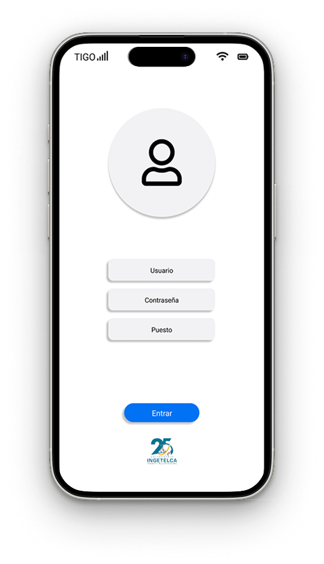
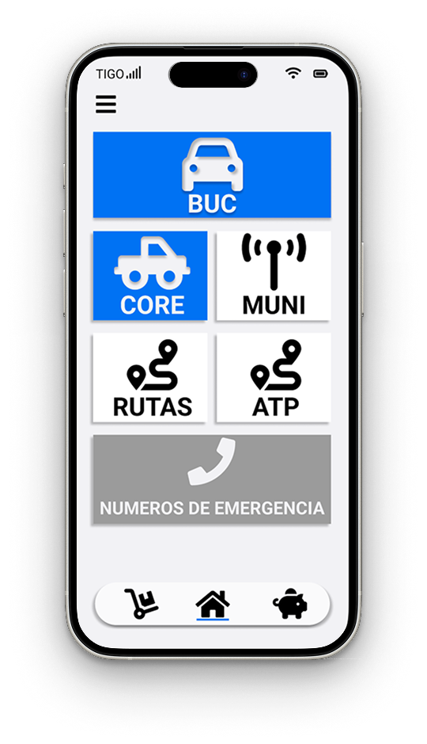
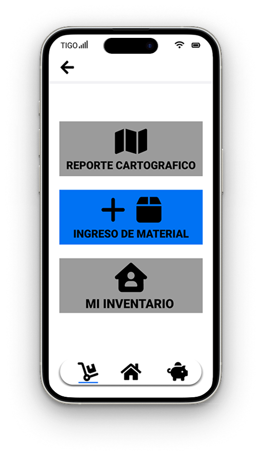
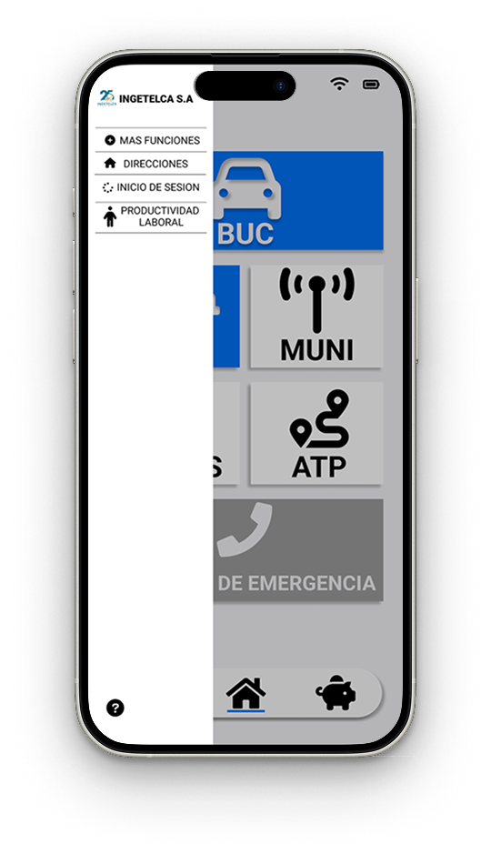

Migración a React Native
Proyecto profesional
Proyecto profesional
El proyecto consistió en trasladar una solución operativa existente hacia React Native para mejorar la experiencia de uso, la estructura visual y la flexibilidad del producto.




La solución original ayudaba al equipo, pero el crecimiento del sistema pedía una base más sólida, personalizable y preparada para nuevas funciones.
AppSheet limitaba la personalización de algunas interacciones, la claridad visual y la capacidad de escalar la experiencia según nuevas necesidades del producto.
Se diseñaron interfaces de alta fidelidad y se definieron flujos más claros para acompañar la migración técnica hacia una aplicación nativa.
La solución evolucionó hacia una aplicación más flexible y escalable, con mayor claridad visual, mejor navegación y una base más preparada para crecimiento del producto.
Tipo: Migración y rediseño de aplicación
Estado: Implementado / evolución interna
Tecnología: React Native
Enfoque: Experiencia, estructura y funcionalidad